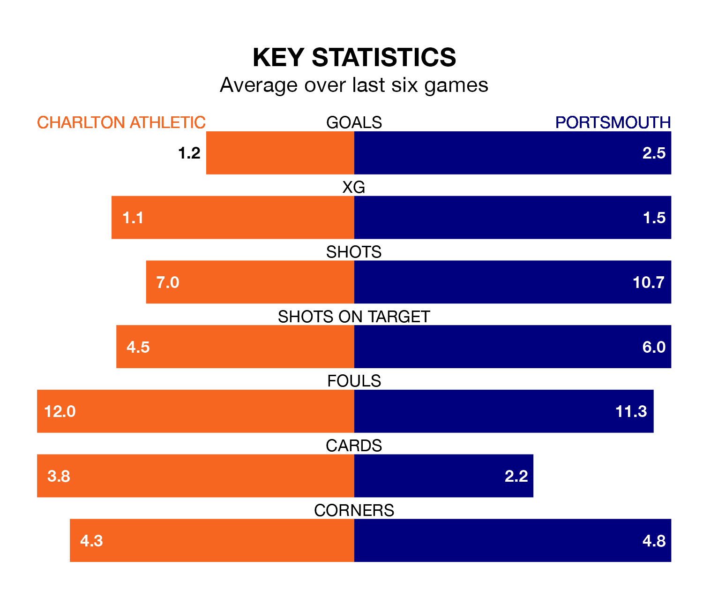

Portsmouth are strong favourites to take all three points despite Charlton Athletic's home advantage in Saturday's match at the Valley.
*Betting Company* are offering odds of 1.95 on Portsmouth sealing the win, with the visitors sitting first in EFL League One table.
Charlton, who are 20th in the league and 39 points behind Pompey, are priced at 3.4 to win. A draw is set at 3.6.
With 58 goals in 34 games so far this season, Portsmouth are the league's joint-second-highest scorers with 1.7 goals per game. And they are conceding fewer than average, letting in 30 goals at a rate of 0.9 per game.
Charlton are also above average scorers, with 1.4 goals per game, compared to a league average of 1.3. They have conceded 1.6 goals per game.
With Will Norris between the sticks, Pompey can rely on one of the league's safest pair of hands. He has kept 15 clean sheets in his 34 appearances this season, and no 'keeper has prevented the opposition scoring more often in EFL League One.
In Athletic's net, Ashley Maynard-Brewer has two clean sheets in 25 games. He has conceded a goal every 66 minutes, 70% more often than the 113 minutes between goals for Norris.
The Addicks are in bad form in EFL League One, with no wins and three draws from their last six games.
With five wins and a draw over that period, the visitors' form is much better – they have taken 16 points from 18, compared to the home team's three.
In the last 10 years, Charlton and Portsmouth have played each other on 12 occasions. Charlton won seven of them, Portsmouth three, and they drew twice.
On average, the Addicks scored 1.7 goals and Pompey 1.1 in those matches.
Their last meeting was on November 11, when they played out a 2-2 draw.
Charlton's last match was on February 17, a 3-3 draw against Bolton Wanderers, with Daniel Kanu, Lloyd Jones and Thierr Small getting the goals for the Addicks.
Portsmouth beat Reading 4-1 last time out, also on February 17, with Callum Lang, Colby Bishop, Marlon Pack and Patrick Lane on the scoresheet.
Updated: 12:18 (UTC), 19/02/24